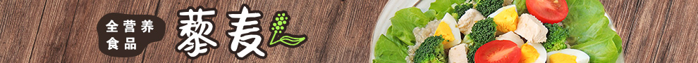

首页
肉禽类
猪肉
羊肉
鸡肉
牛肉
鸭肉
其他肉类
水产品
淡水鱼
海水鱼
虾类
蟹类
贝壳类
其他水产品
蔬菜
茎叶类
瓜菜类
果实类
根茎类
果品
鲜果
干果
米面豆乳
米类
面、粉
豆类
豆制品
药物及其他

时令与热门
鸡肉
鸡翅
鸡蛋
牛肉
土豆
黑木耳
肉禽类
猪肉
排骨
里脊
猪蹄
五花肉
肋排
鹌鹑
更多
水产品类
草鱼
蛤蜊
蛏子
鲍鱼
海蜇
鱿鱼
海参
海带
紫菜
更多
蔬菜类
白菜
油菜
>
香菇
金针菇
杏鲍菇
茭白
竹笋
荠菜
香椿
马兰头
更多
果品类
菠萝
草莓
芒果
木瓜
牛油果
百香果
栗子
更多
米面豆乳
糯米
小米
荞麦米
玉米
更多